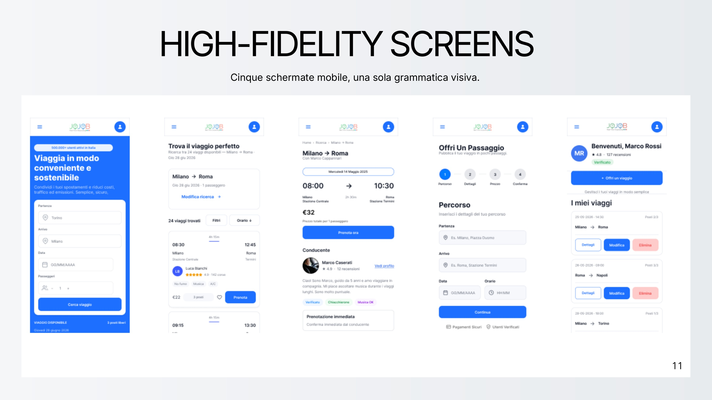
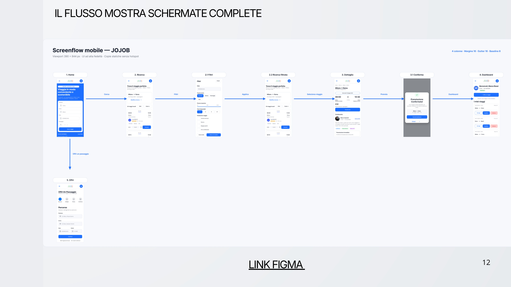
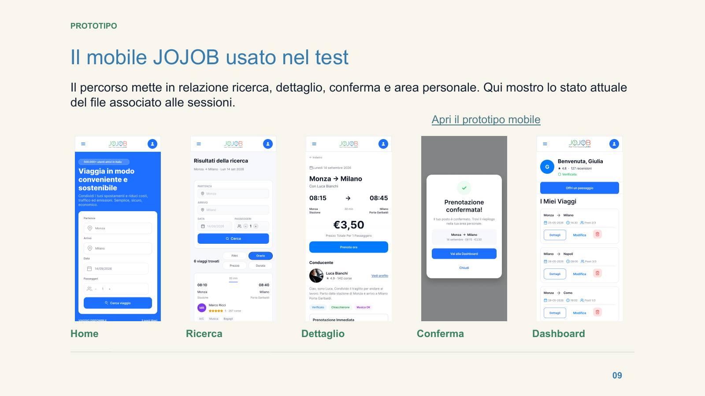
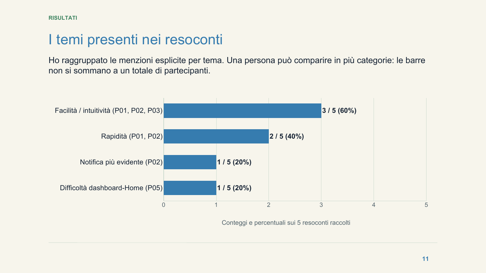

01 · Servizio
- Cos’è il carpooling
- Benefici e funzionamento
- Testimonianze
Case study · UX/UI design
Un progetto end-to-end che trasforma ricerca, criticità e bisogni in un’esperienza responsive più semplice, leggibile, rassicurante e verificata con utenti.

01 · Contesto
JOJOB facilita la condivisione dei tragitti casa-lavoro. L’analisi ha però evidenziato frizioni capaci di ostacolare l’adozione: percorsi poco chiari, processi percepiti come lunghi e pochi segnali visibili di sicurezza.
02 · Ricerca
La seconda fase di Discovery ha combinato cinque micro-interviste, un questionario con 40 risposte, empathy map e dati dell’Osservatorio JOJOB. Gli insight sono stati sintetizzati in tre personas con esigenze e livelli di familiarità digitale differenti.
Giulia cerca sicurezza e risparmio, Alessandro vuole un’esperienza guidata e comprensibile, Sara desidera flessibilità e integrazione con altri mezzi. Le loro journey hanno reso visibili i momenti in cui curiosità e interesse si trasformavano in frustrazione o dubbio.
03 · Definizione
La nuova architettura informativa è stata organizzata intorno ai due task principali — cercare e offrire un passaggio — riducendo la dispersione e rendendo più riconoscibili sicurezza, community e vantaggi del servizio.
04 · Wireframing
I wireframe sono stati sviluppati su griglia desktop a 12 colonne e mobile a 4 colonne. Homepage, ricerca, dettaglio viaggio, pubblicazione e dashboard condividono gerarchie, CTA e componenti ricorrenti.
Il wireflow verifica continuità, feedback e riduzione dei passaggi nel task principale.
05 · UI design
Il design system mantiene riconoscibile il blu JOJOB e introduce una scala tipografica basata su Inter, componenti riutilizzabili, colori semantici e stati interattivi. Focus visibili, contrasti e messaggi di errore supportano accessibilità e comprensione.
Palette primaria, neutri e colori semantici per feedback immediati.
Una gerarchia modulare per contenuti scansionabili su ogni device.
Button, form, card e badge progettati con varianti e stati coerenti.
06 · Mobile experience
La UI mobile traspone i layout desktop approvati su un viewport di 390 px, conservando contenuti e gerarchie e adattando struttura, spaziature e interazioni al touch.
La struttura diventa verticale senza eliminare informazioni o funzionalità.
Griglia a 4 colonne, baseline di 8 px e componenti documentati e riutilizzabili.
Target minimi di 44 px, stati dei controlli riconoscibili e feedback sempre visibili.
Home, ricerca, filtri, dettaglio, conferma, offerta del passaggio e dashboard.


07 · User testing
User Test 1 definisce il protocollo; User Test 2 documenta le sessioni e trasforma ciò che è emerso in ipotesi da verificare. Le due consegne diventano così un unico percorso, senza confondere obiettivi, risultati e decisioni progettuali.
Ho progettato un test di usabilità moderato su smartphone, con think-aloud e domande neutrali. Il piano comprende recruiting, screener, prova pilota, script, cinque attività e criteri di osservazione.
Ho coinvolto cinque pendolari dai 25 anni in su. Le fonti disponibili — registrazioni, resoconti, fotogrammi e appunti — sono state ricondotte a un ID, mantenendo separate osservazione e interpretazione.
Protocollo
Scenario principale: Monza–Milano Porta Garibaldi, 14 settembre 2026. La prenotazione era simulata e non prevedeva pagamenti o operazioni reali.

Evidenze
Tre partecipanti hanno menzionato facilità o intuitività e due hanno sottolineato la rapidità. Sono inoltre emerse due segnalazioni specifiche: il ritorno dalla dashboard alla Home e la visibilità della conferma di prenotazione.

Ipotesi di miglioramento
Provare un comando “Torna alla Home” visibile nella dashboard, preservando viaggio prenotato e stato della sessione. Nel retest verificherò ritorno senza suggerimenti e comprensione dell’azione.
Rafforzare il feedback già presente e provare un overlay con la CTA “Vai ai miei viaggi”. Il retest dovrà verificare se l’esito è riconosciuto e se il viaggio viene ritrovato.
Queste sono ipotesi progettuali nate dalle evidenze, non modifiche già validate. Prima del retest va inoltre corretta la discrepanza di data tra conferma e dashboard.
08 · Risultato
Il redesign collega ricerca, architettura, interfaccia e validazione in un unico processo. Le sessioni confermano una percezione generalmente positiva e mettono a fuoco due verifiche circoscritte su orientamento e comprensione dello stato.
Prossimo passo: implementare le due varianti, riallineare i dati del prototipo e riproporre gli stessi scenari registrando per ogni task punto di arrivo, aiuti e tempo effettivo.